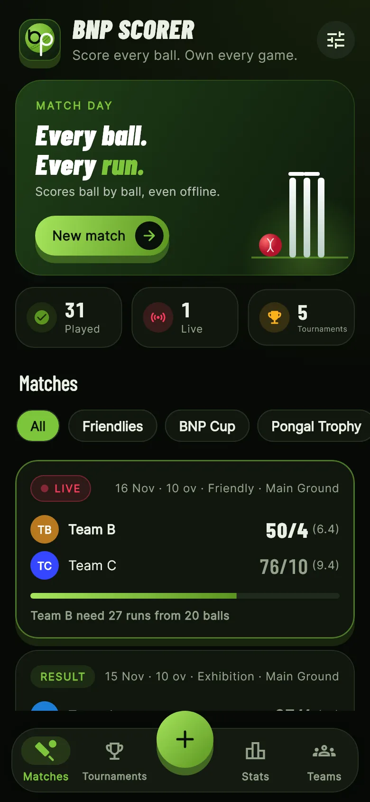
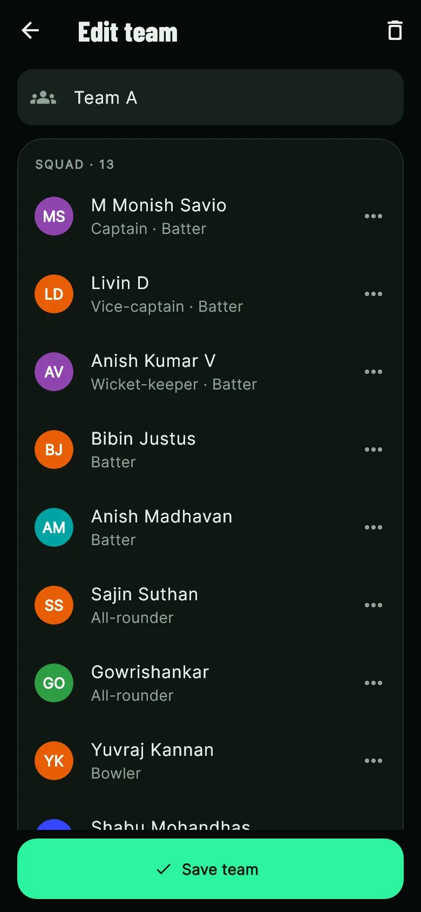
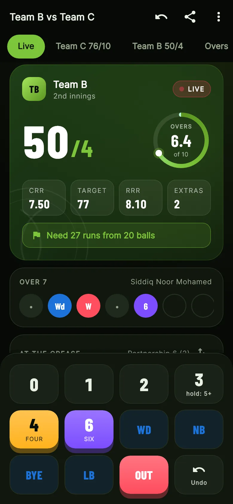
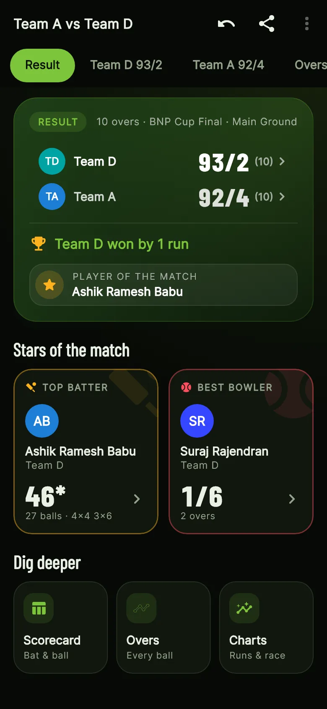
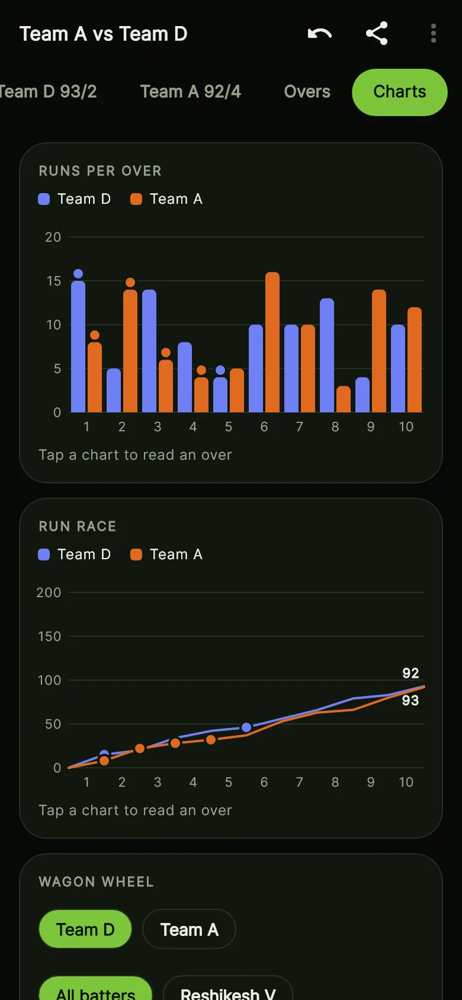
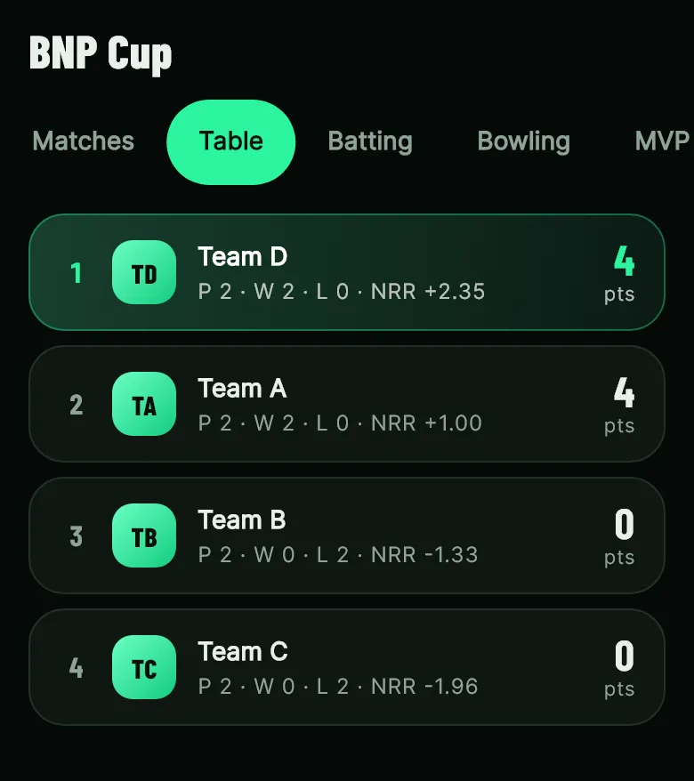

Every ball.
Every run.
Free cricket scoring for local, club and gully matches. Big keys you can hit in bright sun, the real laws of cricket underneath, and no signal needed at the ground.
Need 27 runs from 20 balls

Your whole match day
From picking the squads to the points table at the end of the season.
-
Before the toss
Save your squads once and start a match in a few taps.
- Saved teams with batters, bowlers and all-rounders, plus the captain, vice-captain and wicket-keeper.
- No typing names one by one: paste the squad straight from WhatsApp, or import every team from an Excel or Google Sheets file. Download the template.
- Add players by mobile number: someone who has joined brings their profile and career along; anyone else is invited under their number and claims their matches when they join.
- Any length of match: pick the overs, or tap a preset.
- Your ground's rules: whether wides and no-balls give a run, free hits, last man stands, and a limit on overs per bowler.
- Short of players? Play with as few as two a side.

-
Ball by ball
One tap for most balls. The app knows the rules, so the score is right.
- Big keys for 0 to 6, wides, no-balls, byes, leg byes, OUT and Undo.
- Only the dismissals that can happen on each kind of ball, and free hits after a no-ball.
- Run outs done right: say which end, and it shows who faces next.
- Live chase numbers: target, required rate and "need 27 from 20".
- Never stuck: if a side runs out of bowlers, the app eases the rule so play goes on.
- Followed live: sign in, and anyone with the app can watch your match ball by ball under Matches › Everyone.

-
After stumps
The full story of the match, ready to share in the group.
- Result with Player of the Match, plus the top batter and best bowler.
- Scorecards with fall of wickets, extras and every bowler's figures, and every over ball by ball.
- Charts: runs per over, the run race and a wagon wheel of where the shots went.
- Share to WhatsApp as a scorecard picture.


-
Across the season
Run a whole tournament from one phone.
- Leagues, two groups or a knockout cup of up to 64 teams with byes, then quarter-finals, semi-finals and a final, all on a bracket.
- Prizes, entry fees and rules, with who has paid kept on your phone, and upcoming matches with a WhatsApp invite.
- Points table with net run rate, worked out from the matches you score.
- Super Overs settle tied knockout games.
- Leaderboards and awards: runs, wickets, boundaries, MVP and Player of the Tournament.
- Player and team profiles built from every match you score, always in step with the scorecards. A player's page shows their last five innings, batting and bowling for their career, this year or the last ten matches, split by T10, T20 and longer games, and their debut and latest match.
- Your own player profile: sign in, confirm your mobile number with a code, and every match a captain scored with you under that number counts on your page. The number is never shown.

Built for the way you play
Every ground plays a little differently. Set it up your way.
- Any number of overs
- Wides with or without a run
- No-balls with or without a run
- Free hit on or off
- Last man stands
- Max overs per bowler
- Record shot direction
- Retired hurt and retired out
- Abandon a match with no result
- Paste or import squads
- Backup and restore
- Light or dark screen
Your matches, your choice
- No account neededOpen it and start scoring. Sign in with Google only if you want to publish.
- Works offlineScoring needs no signal. Published matches catch up when you are back online.
- Public only if you chooseMatches stay on your phone until you sign in. No ads, no tracking, your email never shown.
Get the beta
BNP Scorer is in beta with local scorers now. It is free, and it will come to Google Play next.
Needs Android 7.0 or newer. iPhone is not supported yet.
The latest beta, about 60 MB. What's new and all versions
- Download the app on your phone Tap Download for Android above. It also comes as a file on WhatsApp.
- Open the file, then Install If your phone asks, allow installing apps from your browser or Files.
- Score your next match New versions install over the top and keep your matches.
Questions
Is it really free?
Yes. No ads and nothing to buy.
Do I need internet at the ground?
No. Scoring works fully offline. You only need a connection to publish a match for others to follow, or to share a scorecard on WhatsApp.
What if I change or lose my phone?
Make a backup in Settings now and then and keep the file somewhere safe, like Google Drive. Restore it on the new phone and everything comes back.
Can two people score the same match?
Not yet. One phone scores each match. Sign in on that phone, and anyone with BNP Scorer can follow the match ball by ball under Matches › Everyone.
Can I run a cup or a cash tournament?
Yes. Play a league, two groups, or a straight knockout of up to 64 teams with byes, then quarter-finals, semi-finals and a final. Add the prizes, entry fee and rules, and keep track of who has paid, which stays on your phone. Sign in, and everyone can follow the bracket and the upcoming matches.
Our teams are in Excel. Can I bring them in?
Yes. Download the template, fill in a row per player with the team, name and role (Captain, WK, Bowler and so on), and keep it as CSV when you save. In Google Sheets use File › Download › CSV. Then tap the import button at the top of the Teams tab and pick the file. The same button can share the template from the app, to WhatsApp, email or Drive. For a team or two, paste the list from WhatsApp on New match or on a team's page instead.
How do players get their own stats page?
Every player has a page with their recent form, batting, bowling and debut. To make it yours across every team you play for, sign in, open Settings and add your mobile number; we text you a code to confirm it. Captains can add you by that number, so the matches they score count on your page. Your number is never shown to anyone.
Does it handle rain rules like DLS?
Not yet. If rain stops play, end the innings early, or abandon the match for no result.
Something went wrong. How do I tell you?
Open Settings and tap Report a problem. It sends us the app version and any recent errors, and you can add what happened.